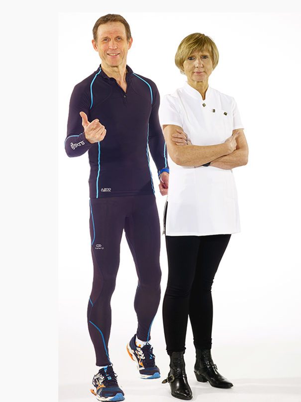
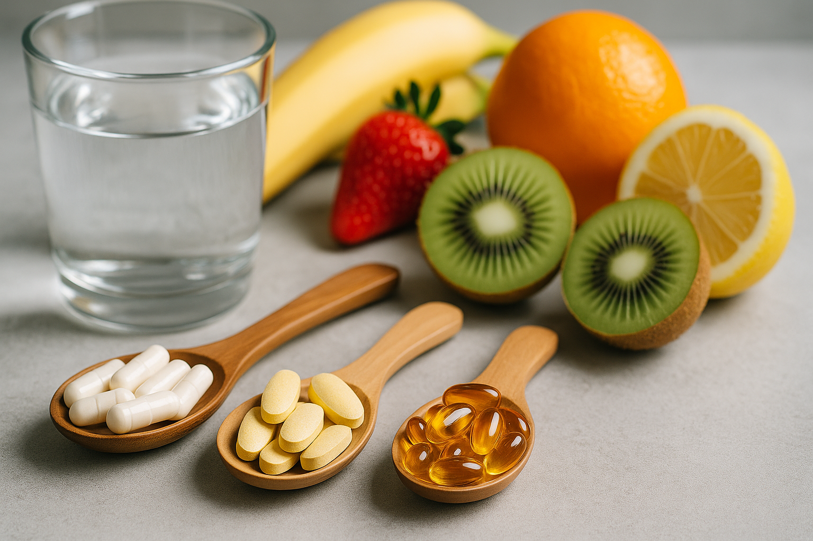
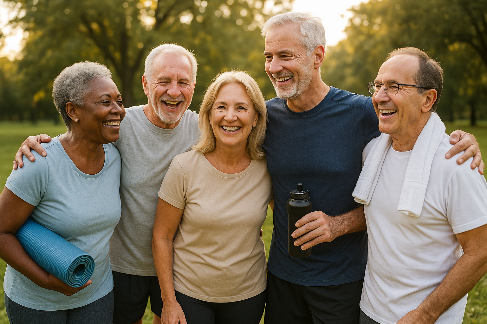

Le programme en ligne qui combine nutrition, sport, micronutrition et coaching personnalisé.
Évaluez votre état de forme et recevez un plan adapté à vos besoins.
Un accompagnement nutritionnel simple, adapté et durable pour optimiser votre santé.
Des exercices accessibles et progressifs pour renforcer votre vitalité.
Optimisez vos apports en micronutriments pour prévenir les carences et booster votre énergie.
Bénéficiez d’un accompagnement individuel et bienveillant pour tenir vos objectifs.
Rejoignez une communauté de personnes qui partagent vos valeurs et vos objectifs.
Notre programme réunit le savoir médical et l’expérience sportive pour une approche globale de votre santé.